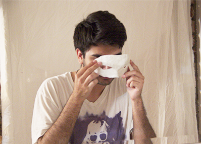

<!--START SLIDE-->

<div>
  <div class="table-cell-left">
    <h2>Remove</h2>
    <div style="width:360px;">
Once it is dry, remove the mask from your face by scrunching your face lifting your eyebrows, etc. You can also use your hands to slowly peel it off your face.
</div>
  </div>
  <div class="table-cell-right">  </div>
</div>
<!--END SLIDE 1-->